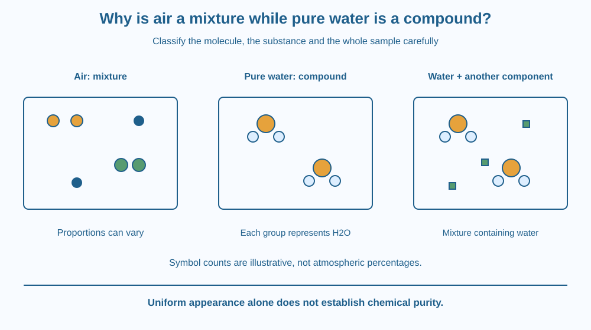

Distinguish a mixture from a compound using composition and chemical identity. Explain why air can contain changing proportions of components while pure water has a defined molecular composition. Keep the idea of pure water separate from an ordinary sample containing dissolved materials.
Air is invisible and can look uniform. Pure liquid water can also look uniform. Appearance therefore does not reveal that one is a mixture of substances and the other is a compound.
Air in a humid room contains more water vapour than air in a dry room. Both are still called air. But a water molecule does not become a different ratio of hydrogen and oxygen just because the weather changes.
What kind of compositional change can occur without creating a different chemical substance? That question helps separate a mixture from a compound.
A mixture contains more than one substance combined without requiring those components to form one new fixed-ratio chemical substance. Its proportions can vary. Mixtures can be visibly uneven or uniform at the scale at which they are observed.
Air contains several gases. Nitrogen and oxygen are major components, together with smaller amounts of other gases and variable water vapour. An air sample can therefore differ in composition from another sample while remaining a gas mixture.
The components retain their own chemical identities. Oxygen in air has not become a new element called air. Mixing gases changes their distribution and the overall composition of the sample, not necessarily the identity of each component.
A compound consists of elements chemically combined in a defined composition. Pure water is the compound represented by H2O. Each ordinary water molecule contains two hydrogen atoms and one oxygen atom. The formula describes an atomic ratio, not equal spoonfuls of ingredients.
Changing that ratio does not simply create a more oxygen-rich variety of the same water molecule. A different chemical composition refers to a different substance or a mixture of substances. This is distinct from adding a separate gas above a container of water.
Physical separation methods can separate components of mixtures by exploiting their different properties. Chemical decomposition of a compound is a different kind of operation. This lesson uses that distinction conceptually and does not ask students to generate gases or perform chemical decomposition.
Pure water must also be distinguished from drinking water, rainwater or salt water. Ordinary water samples can contain dissolved gases, minerals and other substances. Such a sample is a mixture containing the compound water. Its label in everyday language does not guarantee chemical purity.
Uniform appearance is therefore not a definition of purity. A clear salt solution can be homogeneous while containing more than one substance. A compound can also occur within a complex mixture. The classification depends on components and chemical composition, not just colour, clarity or whether a sample is liquid.
Draw a box containing several kinds of symbols that remain separate from one another. Change the number of each kind in a second box. This models varying proportions in a mixture.
For pure water, draw repeated groups, each with two small hydrogen symbols joined to one oxygen symbol. Keep that grouping consistent throughout. This models the formula ratio without requiring a new explanation of chemical bonding.
Finally add a different dissolved-substance symbol among the water groups. Label the whole box a mixture containing water. The water molecules retain their composition while the overall sample now includes another component. This third picture prevents the mistaken rule that anything called water must be pure.
The SVG compares an air-mixture box with a pure-water box. Different gas symbols appear separately in the first, while identical H2O groups appear in the second. Labels distinguish changing mixture proportions from fixed molecular composition.
A smaller third sample shows water molecules alongside dissolved material. It is explicitly labelled as a mixture containing the compound water. The diagram's symbols are not drawn to scale, and their counts are chosen for clarity rather than to represent atmospheric percentages.
The graphic does not imply that real air molecules are coloured or that every pure substance must consist of the same kind of molecule as water.

A humid monsoon day and a dry winter day can involve air with different water-vapour content. The changing component does not require inventing a new compound called humid air. It is a composition change within a mixture.
Water from different Indian regions can contain different dissolved minerals. That does not alter the formula of each water molecule. It alters the composition of the sample as a whole. Chemical purity and suitability for drinking are also different questions, so this lesson offers no water-safety diagnosis.
A laboratory label stating pure water is a stronger compositional claim than the everyday word water on a jug. Scientific descriptions become clearer when they specify the level being discussed: molecule, substance or sample.
Use paper and three coloured pencils. No gases, heating or chemicals are needed.
Ask a partner which changes affect the whole sample's proportions and which would change a molecule's formula. Your drawing models composition rather than visible size, exact atmospheric percentages or the physical positions of real molecules.
Could a mixture have a very carefully controlled composition? Yes: variable composition means the proportions are not fixed by one compound's chemical formula, not that every mixture must change randomly.
Now consider a sample containing pure-water molecules plus dissolved salt. Explain why saying “water is a compound” and “this salt-water sample is a mixture” can both be correct. Identify the object each sentence classifies.
What does H2O specify for an ordinary water molecule?
Answer: A — The formula gives the fixed atomic composition of a water molecule.
Why is air classified as a mixture?
Answer: C — Air contains several gases whose overall proportions can vary.
A clear sample contains water and dissolved salt. How is the whole sample classified?
Answer: B — The sample has more than one substance even though its water molecules remain H2O.
Write a guide correcting three claims: all clear samples are pure, all mixtures are visibly uneven, and changing humidity changes the formula of water.
Use one picture for air, one for pure water and one for a solution containing water. Each correction should name the component or ratio that matters. Do not perform a decomposition experiment; the task is classification from a model of composition.
The same compound can appear inside many different mixtures without losing its chemical identity. A water molecule in a carefully described model can keep its H2O composition while the surrounding sample varies widely. Confusion often arises when a statement about an entire sample is applied to one molecule, or the reverse.
Air is a mixture with variable component proportions; pure water is a compound with H2O composition, while ordinary water samples can be mixtures containing it.